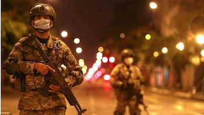

El periodismo peruano y la política regional se encuentran de luto tras el violento asesinato de Susy Polo, conocida popularmente como "La China Polo", quien fue acribillada en pleno desarrollo de sus actividades cotidianas al interior del Mercado Central de Caraz.
El atroz crimen ocurrió la tarde de este viernes, generando una profunda conmoción entre los comerciantes, compradores y vecinos de la provincia de Huaylas, en el departamento de Áncash. Susy La China Polo no solo era una destacada figura de los medios de comunicación locales, caracterizada por su estilo frontal y crítico, sino que también se encontraba participando activamente en la contienda electoral como candidata al Gobierno Regional de Áncash.

Un ataque perpetrado a sangre fría
De acuerdo con los primeros reportes brindados por la Policía Nacional del Perú (PNP), la comunicadora se encontraba recorriendo las instalaciones del centro de abastos como parte de sus actividades proselitistas y de fiscalización cuando fue interceptada por sujetos armados. Sin mediar palabra ni respetar la alta concurrencia de público, los sicarios le dispararon a quemarropa en múltiples ocasiones.
El sonido de las detonaciones desató el pánico masivo dentro del mercado. Comerciantes y ciudadanos que realizaban sus compras diarias corrieron en busca de refugio, mientras que los atacantes lograron huir a bordo de una motocicleta lineal que los esperaba con el motor encendido en las inmediaciones del recinto comercial.
Consternación en el gremio periodístico y político
La noticia del homicidio de Susy La China Polo se propagó rápidamente a través de las redes sociales y los medios nacionales, generando reacciones inmediatas de condena. Diversos gremios periodísticos del país han alzado su voz de protesta para exigir al Ministerio Público y a la Policía Nacional una investigación exhaustiva, célere y transparente que permita identificar y capturar tanto a los autores materiales como a los determinadores intelectuales de este crimen.
"La pérdida de Susy La China Polo enluta no solo a su familia y a la región Áncash, sino a toda la prensa peruana que ejerce su labor en zonas vulnerables. Exigimos garantías y justicia inmediata ante este atentado contra la libertad de expresión y la democracia."
Por su parte, los representantes de la agrupación política por la cual postulaba al Gobierno Regional de Áncash expresaron su profundo dolor y exigieron al Gobierno Central declarar en emergencia la seguridad ciudadana en las provincias altoandinas, señalando que la violencia criminal está interfiriendo directamente en los procesos democráticos del país.
Investigaciones en curso
Hasta el lugar de los hechos acudieron los representantes del Ministerio Público para ordenar el levantamiento del cadáver y su posterior traslado a la morgue central, donde se le practicará la necropsia de ley. Las cámaras de seguridad instaladas en los alrededores del Mercado Central de Caraz ya se encuentran en poder de la División de Investigación Criminal (Divincri), cuyas unidades especializadas analizan cada fotograma para trazar la ruta de escape de los sicarios.
Las autoridades han solicitado a la ciudadanía cualquier información fidedigna que ayude a esclarecer este crimen, garantizando absoluta reserva para los colaboradores. Mientras tanto, Áncash permanece en silencio y con la dolorosa incertidumbre de saber si este atentado guarda relación con las investigaciones periodísticas o la campaña política que lideraba la recordada Susy La China Polo.